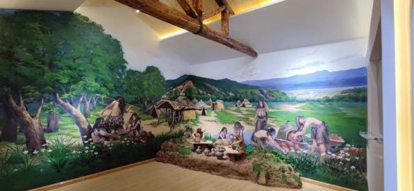
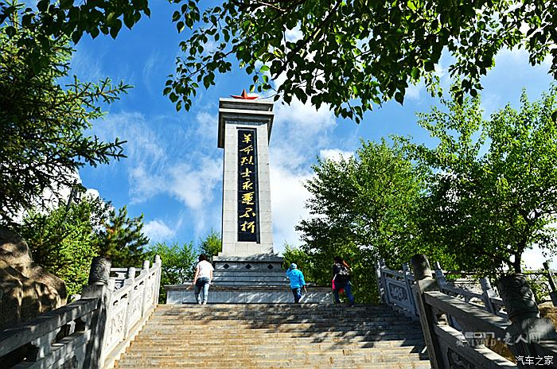
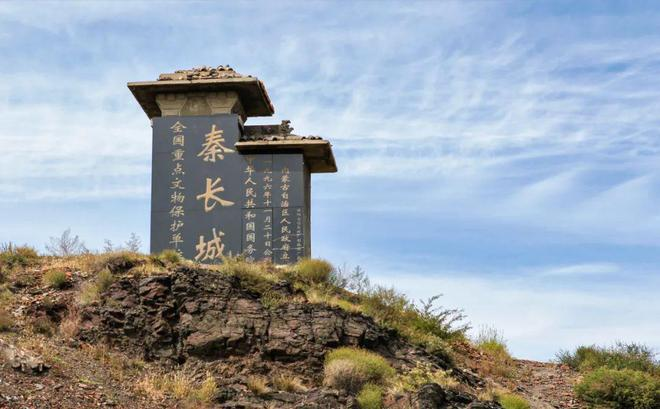
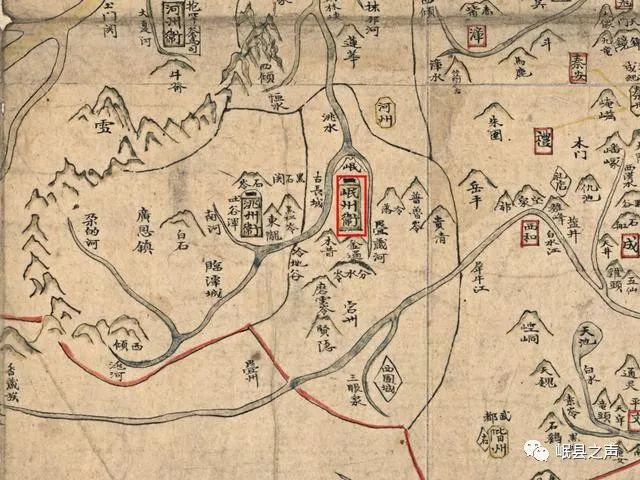
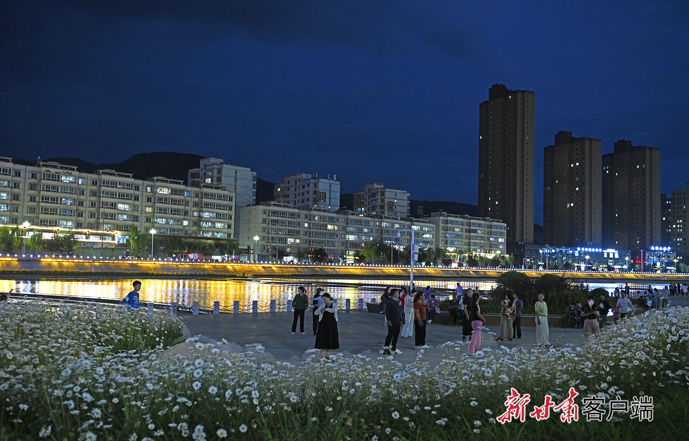
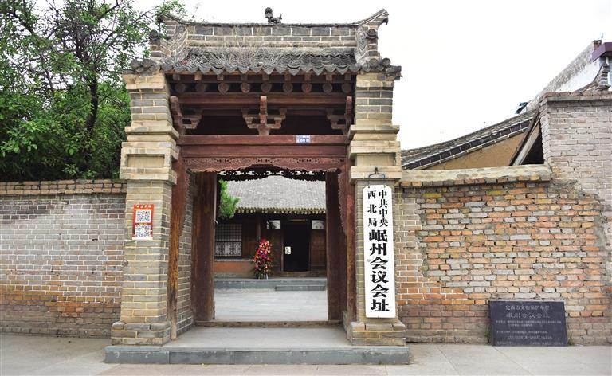
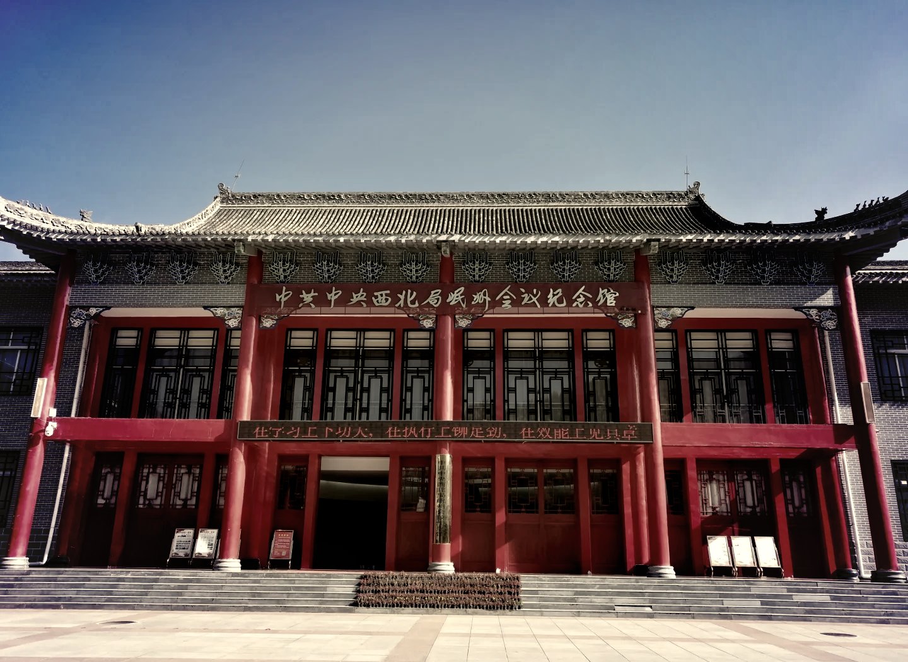

历史沿革

远古时期
马家窑文化的印记
岷县境内发现大量马家窑文化遗址，证明早在新石器时代晚期，这里就有先民繁衍生息。出土的彩陶器皿展现了远古先民的智慧与艺术审美。

秦汉时期
丝路重镇的崛起
秦统一六国后，在此设置临洮郡。汉武帝时期设武都郡，岷县成为丝绸之路上的重要节点，中原文化与西域文化在此交融。张骞出使西域，经过岷县，促进了东西方文化交流。

魏晋南北朝
文化交融的纽带
这一时期，岷县成为北方游牧民族与中原农耕文明的交汇处。期间，佛教文化传入岷县，并与本土文化相互融合，形成独特的地域文化特色。

唐宋时期
药乡盛世的开启
唐代，岷县成为重要的军事要塞和商贸中心。"岷州当归"声名远播，中药材贸易繁荣发展。宋代，岷县继续发展农业和商贸，形成了独具特色的地方文化。
明清时期
传统文化的传承
明清时期，岷县农业发展，中药材种植规模不断扩大。这一时期形成了独特的地域文化，包括饮食习俗、民间艺术等多个方面，为今天的岷县留下了丰富的文化遗产。

近现代
革命历程与发展
1935年，红军长征经过岷县，在这片土地上书写了革命的篇章。新中国成立后，岷县在经济、文化等方面取得了长足发展，特别是中药材产业的现代化建设取得显著成就。
文化遗产
马家窑文化遗址
新石器时代晚期的重要考古发现，出土的彩陶以其独特的纹样和精湛的工艺闻名于世，是研究史前文明的重要实物资料。
古岷州城墙
始建于明代的古城墙，是岷县重要的历史文化遗存，见证了岷县的历史变迁，也是研究古代军事防御体系的重要实物资料。

民间艺术
包括岷县花儿、皮影戏、剪纸艺术等多项非物质文化遗产，展现了岷县独特的民间艺术魅力和文化传承。

红色文化遗产
包括红军长征纪念馆、革命遗址等，这些都是岷县革命历史的见证，也是进行爱国主义教育的重要基地。
药材文化遗产
以"岷州当归"为代表的中药材种植传统，形成了独特的药材文化，包括种植技艺、加工工艺等珍贵的文化遗产。
民俗文化遗产
包括传统节庆、民间习俗、饮食文化等，这些都是岷县人民世代传承的生活智慧和文化精髓。